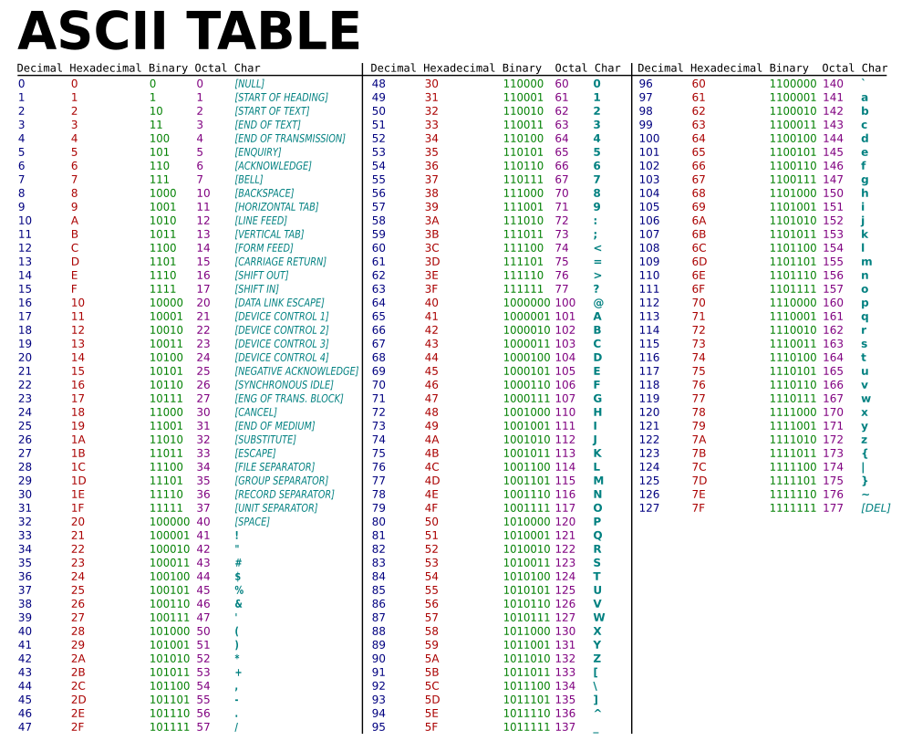

<div class="row">
    <div class="col">
        <div class="training-text-section">
            <p>
                Keeping things simple, there are basically 4 core primitive types. Bytes, Booleans, characters, and
                numbers. Boolean values are the simplest. They can be represented with 1 bit, as a boolean can only have
                the values "true" or "false." Bytes literally references bytes in memory, allowing you to work with the
                memory in a raw way, not caring if it is storing a character, number, etc. Character values represent
                the letters and symbols we use to create language. You're reading characters right now! We said there
                are "basically" 4 primitive types because numbers are not a type on their own. There are actually many
                different primitive types used to represent numbers, but they all share the fact that the bits used to
                make them up represent numbers, so we can do binary mathematical operations on them. Let's focus on
                characters for now.
            </p>
        </div>
        <div class="training-text-section">
            <p>
                We’ll start out with the original way characters were represented because it is simple, then move on to
                how they are represented for the most part today. Each character you see on the screen or your keyboard
                is stored in 1 byte. The way characters work is that each character is assigned a numeric value between
                0 and 127. If you recall your powers of 2, 2^7 = 128, so with 7 bits we can represent 128 characters by
                storing their assigned number in binary in a byte. Only 7 of the 8 bits in a byte are used for
                historical reasons, which we won’t bother you with here. How do we know which number corresponds to
                which character? ASCII! ASCII stands for the "American Standard Code for Information Interchange."
                Basically, a group of people got together because they realized the world needed a standard
                number-to-character translator. Without a common standard, devices and computers made by different
                people would not be able to talk to each other. If one company assigned the number "1" in binary to the
                character "A", and another company assigned the number "1" in binary to the character "%", then you can
                bet people sending each other messages would be confused! One important thing to note is that ASCII is
                both a standard and a character encoding. A character encoding simply states how to represent a
                character’s assigned number in memory. ASCII is very simple, as all characters can be represented in 1
                byte. But later we will see that there are multiple character encodings for the standard used today,
                UNICODE.
            </p>
        </div>
        <hr />
        <div class="training-text-section">
            <h5 class="font-weight-light">Try it Out! Use the ASCII table and punch in the binary number to see the
                character it represents!</h5>
            <p>
                (Put 7 inputs for bits here, and let people enter binary numbers and show the corresponding character
                when they do)
            </p>
        </div>
        <div class="d-flex justify-content-center">
            
        </div>
    </div>
</div>